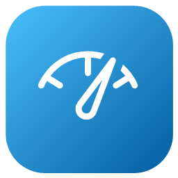

HeMi Launcher
One place for all HeMi apps: install them with one click, keep them up to date in the background – and HeMi Launcher updates itself too. Small, in the look of Windows 11, and it talks to nothing but GitHub.
Windows 10 / 11, x64 and ARM64. One small program, nothing else to install.
HeMi Launcher



What it does
Install with one click
HeMiDock, HeMiPix, HeMiUnlocker and HeMiPad with their own installers – just for you or for all users; HeMi Dark and HeMimizer straight into Downloads.
Always up to date
After its start and every 4 hours it looks for new versions; Update or Update all, or let it install them quietly by itself.
Out of the way
Closing hides it in the notification area, it can start with Windows, and a Windows notification tells you about new versions.
Works with the apps
With the launcher on the PC the apps leave their updates to it; HeMiDock shows the new versions among its status icons.
What's new
The notes of every release right in the launcher, before you update.
Checked downloads
Every installer and zip is compared with the checksums of its release before it is run or unpacked.
Portable versions
Into the Downloads folder or a folder you choose – and kept up to date like the installed apps.
Updates itself
The installed one with its installer, the portable one by replacing its own exe.
Downloads
| HeMiLauncher-Setup.exe | The installer: just for you or for all users, optionally started with Windows. |
| HeMiLauncher-Portable.zip | Just the program – run it from any folder (-arm64 for Windows on ARM). |
| Problems, ideas | GitHub Issues |